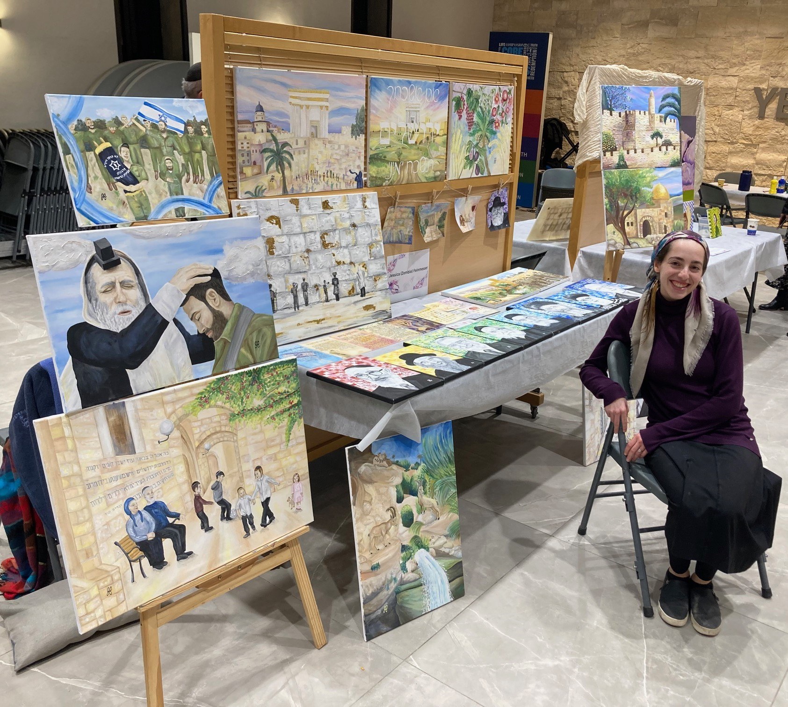

Meet the Artist
Hi! My name is Jessica (Zemble) Feinmesser. After making Aliyah in September 2021, I am proud to call myself a Jerusalem Based Artist. I have been scribbling on walls, drawing, and painting since I could first hold a crayon. At first, art was simply a hobby. After time and practice, however, it developed into a skill, and finally it transformed into a passion. For me, art is not just a way to spend time. Rather, it is a way to portray ideas and feelings that often cannot be put into words. Each stroke and splatter tells a story of its own. I attended art lessons for many years before progressing to independent work. After much commitment to my personal development, I began teaching lessons of my own to budding young artists. My artwork can be found in homes, institutions, and publications throughout Israel and America. The Jerusalem Canvas began when a friend asked if I could sell prints of my artwork- she wanted to gift them to her future husband as a wedding present. Me? Sell my paintings? Who was I to be able to do that? Despite my insecurities I said yes, and haven't looked back since. With immense gratitude to Hashem, the response has been incredible, and it is an honor to have my artwork displayed on the walls, frames, and benchers of happy clients across the globe.
I have combined my background in computer science and art in order to develop The Jerusalem Canvas's website. Here you will find paintings from different stages and perspectives in my life. Each tells a story, and each will relate to its viewer in a unique way. In addition to the paintings and prints available in the gallery, I offer the special service of working directly with customers to create custom paintings, portraits, and logos. I am more than happy to be in touch with you regarding any questions or comments that you might have. Check out our “Contact Us” page for more information, reach out directly to thejerusalemcanvas@gmail.com